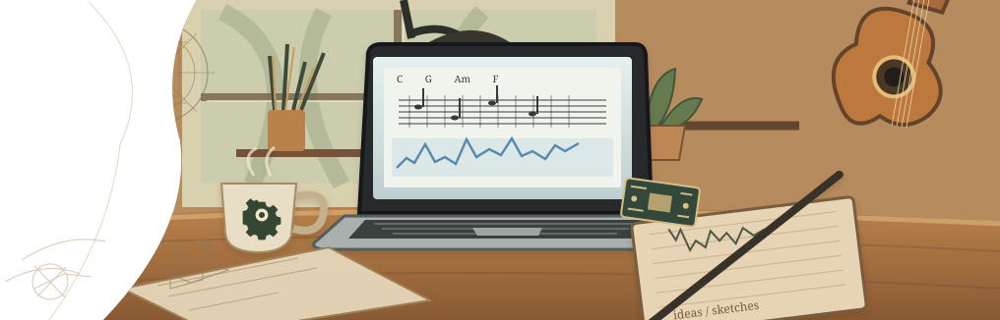
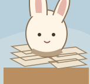
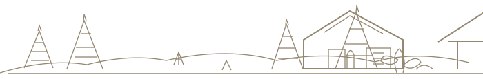

研究中
Down — 把手机扣下，把注意力收回来
专注，从放下手机开始Down your phone. Up your focus.

不同的练习，同一种认真。

粘贴截图，图片进指定文件夹
写 Markdown 时插截图总绕路。这个 VS Code 扩展让粘贴直达约定目录，本站文章大多也靠它写完。
更多有趣的想法，正在路上……
已上线
读简谱，选调变速跟着练
研究中
专注，从放下手机开始Down your phone. Up your focus.

FIG. 00 / 读法
下面是教学用的缩小模型：公式、伪代码和可点的实验。它们解释意图与边界，不是完整产品源码的镜像。
01 / 吉他兔 · 离散频谱
音频特征落在频域。下面用 2017 年笔记里的合成信号：256 点、采样率 256 Hz，直流与 50 Hz、75 Hz 应落在第 1、51、76 个频点（从 0 起算的索引）。这是 DFT 教学示意，不是和弦识别器。
S(t) = 2 + 3 cos(2π·50t − 30°) + 1.5 cos(2π·75t + 90°)
// 示意：离散傅里叶变换幅度
for k in 0..N/2:
X[k] = Σₙ s[n] · exp(-2πi kn / N)
mag[k] = |X[k]| / N
// 索引 k 对应频率 k · Fs / N02 / 爬来兔 · 状态转移
打乱段落再排回去，是对有序列表的状态转移，不是全文编辑器。拖动提出候选；若序列非法则保持上一状态。下面三段请拖回正确顺序（键盘：聚焦段落后按 ↑ / ↓ 移动）。
打乱后的段落 · 拖到正确位置
(St+1, Et) = reduce(St, Ct)
candidate = applyMove(durable, command)
if validPermutation(candidate):
durable = candidate
publish(effects)
else:
keep(durable) // 无效移动不改世界还在白板上
音高与音色缠在一起。怎样把进行从幅度峰里拆干净，又留出人工改谱的缝？
若每一次「放下手机」都是一条事件，余额和失败能否像账本一样复现？
立场
状态是什么？哪些量该不变？写入失败、帧卡住、模型到头时，会发生什么？这个模式邀请你检查那些决定。